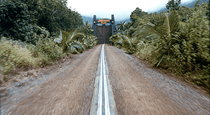

Tour road
The park drive
The Park Drive (also called Safari Tour) was the main attraction for Jurassic Park. It exists in both the novel and movie canons, but has different dinosaurs for both.
In both canons, the point of the attraction is to safely transport visitors through enclosures while educating them about the dinosaurs in the park. In the film, a rail ran through the center of a road to guide the Ford Explorer Tour Vehicles on their journey through the Park.
The tour traveled counter clockwise along the road, the tour vehicles making a right turn once the vehicles went through the main gate and into the Park itself.